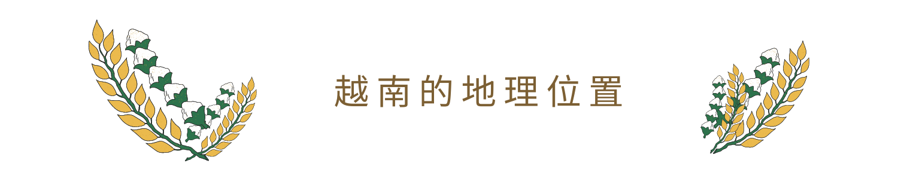
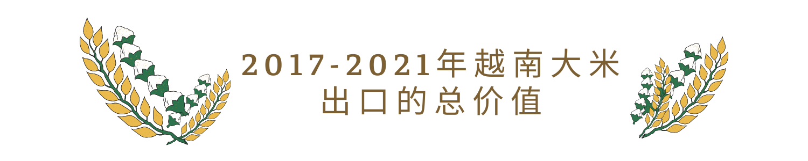
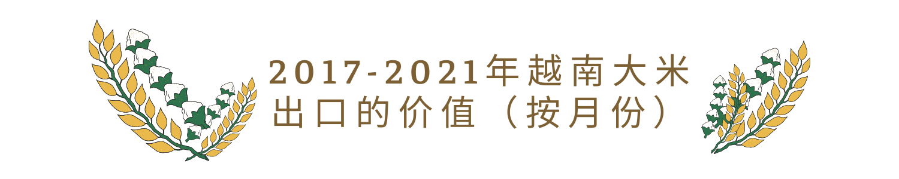

越南是一个亚洲国家，位于印度支那东阳半岛、东南亚、太平洋沿岸。


1.1. 越南地理位置的特点：
- 靠近回归线。
- 靠近东南亚中心。
- 连接海洋和陆地，连接东南亚海洋和东南亚陆地。
- 接触季风和生物流。
1.2. 越南气候的特点：
- 越南的领土完全位于热带地区、多样性和无常。
- 有潮湿的热带季风性质：四时八节的热带天空提供一个丰富的热能源,一年的日照时间为1400-3000小时。
- 年平均气温大约21摄氏度，从北向南逐渐增加。
- 季风带来大量降雨（1500-2000mm/年），空气湿度很高（80%以上）
- 虽然越南的领土完全位于热带地区， 但根据柯本气候分类法，越南的气候分为三个区域:
(1)北部属湿润的亚热带气候。
(2)中北部、中部和中南部地区属热带季风气候。
(3)中部和南部最南端的地区具有热带稀树草原的特征。
1.3. 越南土壤的特点：
我国有三个主要的土地组：Ferralsols、Humic Acrisols和Alluvial
Soil（海洋中和河中冲积土），占自然土地面积的24%。这组土地集中在大或小的平原，从北到南。最大和最肥沃的是九龙平原（4万平方公里）和红河平原（1.5万平方公里）。
冲积土一般非常肥沃，易于种植和灌溉，土壤疏松，酸性较低，富含腐殖质，适合种植多种植物如稻子、粗粮等等。
=》以上所有条件都证明越南是一个适合种植水稻的国家。


越南在东南亚较早开始种植水稻，由于大部分地区都适宜种植水稻，加上近年出现很多新的水稻品种,农时结构发生了变化，有早农时、正农时、晚农时。
水稻是一种粮食作物，在保障我国粮食安全方面发挥着关键作用。越南政策鼓励发展农业生产。
投资：水稻生产技术设施（灌溉、化肥、机械、作物服务），尤其是引进适合不同生态区域的新品种大批量种植。庞大的消费市场（国内和国外）。
2017-2021年，越南大米出口总量近3100万吨，每年约500至600万吨。 最高为2019年，超过630万吨。最低为2017年，超过570万吨。

2017至2021年，越南大米出口总值达150亿美元。最高的是2021年，出口额超过32亿美元。 最低的是2017，出口额只超过26亿美元。尽管受到疫情影响，越南在疫情最严重的年份仍保持出口产量和价值。
2017年，大米出口量在年中前后最高，年初和年末较低。 月平均产量为 48.24万 吨。
2018年，大米出口量上半年高，下半年低。月平均产量为50.96万吨，比 2017 年增加约 2 万吨。
2019年，越南继续增加大米出口，平均每月53.05万吨,比两年前最高。
2020年月平均大米出口量比2019年减少1万左右，达到52.07万吨，但总体上仍是稳定的月均大米出口量, 仅在5月份，大米出口量突然增加，近百万吨，这是 Covid-19 疫情的第一年，也许各国进口大米储存一年来抗击流行病。
2021年也是各国加强措施抗击Covid-19疫情的一年。 1、2月份大米出口量下降，但随后几个月又逐渐回升。大米月平均出口量保持稳定在51.97万吨。

月份大米出口价值根据出口量上下浮动，但也取决于大米价格。 从2017年到2021年，每月1万吨大米的价格从400万美元以上到500万美元以上不等。

越南大米出口市场因年而异。 大部分出口到中国、菲律宾、马来西亚等亚洲国家； 非洲国家主要是加纳和科特迪瓦。中国和菲律宾常年保持前两名。2017年至2021年越南大米出口情况如下图所示。
下面两张图表显示，2017年至2021年，五个国家从越南进口大米的产量和价值。例如，中国2017年从越南进口大米228.86万吨，为当年进口量最大的国家；但在2020年，菲律宾2020年跃升为最多，从越南进口大米221.85万吨。进口价值也相应增加。